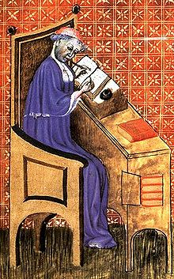
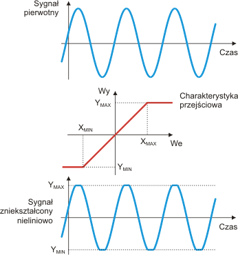

!O stronie!
Strona została przygotowana na konkurs "Zobaczyć Matematykę".
Tematem pracy jest szereg harmoniczny i jego właściwości.
!Szereg harmoniczny!
Szereg harmoniczny to szereg liczbowy wyrażony w postaci:
|Assets/Formulas/1.svg|
Jego nazwa pochodzi od długości fal kolejnych alikwotów drgającej struny,
które są proporcjonalne do 1, ½, ⅓, ¼, ….
Kolejne liczby szeregu harmonicznego to odwrotności kolejnych liczb naturalnych.
Każdy wyraz szeregu, od drugiego włącznie, jest średnią harmoniczną dwóch wyrazów z nim sąsiadujących.
€
!Rozbieżność!
Szereg harmoniczny jest rozbieżny do nieskończoności.
|Assets/Formulas/2.svg|
`Dowód Mikołaja z Oresme`
Dowód rozbieżności szeregu harmonicznego odkryty przez Mikołaja z Oresme jest jednym z ważnych osiągnięć średniowiecznej matematyki:
|Assets/Formulas/3.svg|
Ponieważ suma liczb w każdym nawiasie wynosi ½, ciąg sum częściowych szeregu nie ma granicy skończonej.
€
Ciąg harmoniczny rozbiega się bardzo powoli. Na przykład suma pierwszych 10^43^ okresów jest mniejsza od 100.
Wynika to z tego, że sumy częściowe szeregu harmonicznego zwiększają się logarytmicznie. W szczególności
|Assets/Formulas/8.svg|
gdzie |Assets/Formulas/9.svg| jest stałą Eulera-Mascheroniego i |Assets/Formulas/10.svg| które zbliża się do 0, podczas gdy _k_ zbliża się do nieskończoności.
Leonard Euler udowodnił także, że suma odwrotności liczb pierwszych również się rozbiega
|Assets/Formulas/11.svg|
!Uogólniony szereg harmoniczny!
Wyraża się go wzorem:
|Assets/Formulas/12.svg|
Jest rozbieżny przy |Assets/Formulas/13.svg|
Euler udowodnił, że również szereg odwrotności liczb pierwszych jest rozbieżny.
!Liczby harmoniczne!
Są to kolejne sumy częściowe szeregu harmonicznego.
Jest rozbieżny przy |Assets/Formulas/14.svg|
Były badane w starożytności i pełnią ważną rolę w wielu działach teorii liczb. Potocznie nazywane są szeregiem harmonicznym, są blisko związane z funkcją ζ Riemanna, a także pojawiają się w różnych wyrażeniach licznych funkcji specjalnych.
Zachodzi dla nich równość:
|Assets/Formulas/15.svg|
gdzie 0,5772156649… jest tzw. stałą Eulera. Oznacza to, że szereg harmoniczny rośnie tak szybko jak funkcja logarytm naturalny. Dokładniejsze oszacowanie liczb |Assets/Formulas/16.svg| wyraża się wzorem:
|Assets/Formulas/17.svg|
Uogólnione liczby harmoniczne rzędu n z m są zdefiniowane jako:
|Assets/Formulas/18.svg|
Jeżeli _m_ liczby jest większe od 1 to istnieje granica przy _n_ zmierzającym do nieskończoności.
Inne stosowane zapisy to:
|Assets/Formulas/19.svg|
!Szeregi harmoniczne wyższych rzędów!
Szeregiem harmonicznym rzędu α nazywa się szereg postaci:
|Assets/Formulas/20.svg|
Szereg ten jest zbieżny tylko wtedy, gdy _a > 1_.
Jeżeli dopuści się, by α przyjmowało wartości zespolone i każdej liczbie α, dla której szereg jest zbieżny, przypisze się jego sumę, to tak utworzona funkcja nosi nazwę funkcji dzeta ς Riemanna:
|Assets/Formulas/21.svg|
Funkcja ta ma podstawowe znaczenie w teorii liczb. Związana jest z nią słynna i nierozstrzygnięta do dzisiaj hipoteza Riemanna.
Ponadto naprzemienny szereg harmoniczny jest zbieżny, jednak tylko warunkowo
|Assets/Formulas/22.svg|
!Losowy szereg harmoniczny!
Jest to szereg harmoniczny, w którym mianownik liczb może przyjąć wartość +1 lub -1.
Definiuje się go jako:
|Assets/Formulas/23.svg|
gdzie Sn jest niezależną, równo rozdzieloną losową liczbą mogącą przyjąć wartości +1 i -1 z tym samym prawdopodobieństwem 1/2.
Prawdopodobieństwo zbieżności tego szeregu wynosi 1.
€
€
$H(n) = \frac{2 \cdot H(n-1) \cdot H(n+1)}{H(n-1)+H(n+1)}$
$H(n)$ - n-ta liczba harmoninczna.
Charakterystyczną cechą szeregu harmonicznego jest to, że pozornie wydaje się on zbieżny i dopiero wizualizacja graficzna lub dowód pozwala zrozumieć dlaczego nigdy nie osiągnie on skończonej wartości. €Indeks początkowy:
Liczba elementów:
`Mikołaj z Oresme`

Mikołaj z Oresme (1320-1382) – francuski średniowieczny filozof.
Prowadził badania między innymi w zakresie matematyki, ekonomii, fizyki i astronomii.
Wprowadził potęgę o wykładniku ułamkowym i koncepcję dobowego ruchu Ziemi. Jest również autorem prac na temat teorii pieniądza.
`Dowód D.M. Bradley'a`
Dla dowolnej liczby _x > -1_ spełniona jest nierówność _x >= ln(x+1)_, a więc:
|Assets/Formulas/4.svg|
Ciąg sum częściowych można oszacować:
|Assets/Formulas/5.svg|
Ponieważ |Assets/Formulas/6.svg| więc również |Assets/Formulas/7.svg|
`Dowód z ciągu Fibonacciego`
Limit ciągu Fibonacciego wyraża się w postaci:
|Assets/FibonacciLimit.png|
|Assets/FibonacciProof.png|
|Assets/FibonacciProof2.png|
€$\lim_{n\to\infty} \frac{f{n}-1}{f{n}+1}\neq0$, więc ostatni ciąg jest rozbieżny. Oznacza to, że ciąg harmoniczny również jest rozbieżny.€
`Dowody w formie graficznej`
Kolumny mają wysokość równą kolejnym liczbom harmonicznym.
|Assets/Proof30.png|
Po przekształceniu:
|Assets/Proof30_2.png|
Kolumny mają wysokość równą kolejnym liczbom harmonicznym.
Jasność każdego prostokąta zmniejsza się wraz ze wzrostem jego pola powierzchni.
|Assets/Proof30_3.png|
Po przekształceniu:
|Assets/Proof30_4.png|
!Szybkość z jaką rozbiega się ciąg harmoniczny!
€
Naciśnięcie na bok planszy spowoduje przemieszczenie się kamery.
Za każdym razem samochód przemieszcza się o dystans równy
kolejnej, n-tej liczbie harmonicznej
Odległość pokonana przez samochód to n-ta suma harmoniczna.
!Składowa harmoniczna!
Inaczej alikwot (łac. aliquot, kilka).
W akustyce jest to część składowa dźwięku muzycznego
o przebiegu sinusoidalnym i częstotliwości n=fk, gdzie f jest częstotliwością tonu podstawowego
(składowa podstawowa), natomiast k jest liczbą naturalną większą od 1.
Długości fal kolejnych składowych harmonicznych są elementami szeregu harmonicznego.
€
€
W elektrotechnice harmoniczna jest definiowana jako składowa przebiegu o częstotliwości będącej całkowitą krotnością częstotliwości podstawowej.
Pierwsza składowa harmoniczna jest sygnałem o częstotliwości równej częstotliwości analizowanego sygnału okresowego, zaś częstotliwości kolejnych składowych harmonicznych są wielokrotnościami tej częstotliwości.
€€
Pojawienie się na wyjściu układu wyższych składowych harmonicznych przy pobudzaniu składową podstawową świadczy o nieliniowości tego układu (zniekształcenia nieliniowe).
Bardzo często dąży się więc do minimalizacji zawartości wyższych składowych harmonicznych w sygnale wyjściowym.
€
 €
€
`"Klif" ułożony z książek` |Assets/BookStacking_650.gif| Jak daleko można wysunąć stos książek poza krawędź stołu, tak aby nie spadły one na ziemię? Przyjmijmy, że $n$ jest liczbą książek. Odległość na jaką możemy wysunąć pojedynczą książkę będzie się zmniejszać wraz ze wzrostem masy pozostałych książek, które musi utrzymać. Aby każda książka wspierała kolejne, odległość ta musi być równa długości jednej książki pomnożonej przez $n$-tą sumę częściową szeregu harmonicznego. |Assets/BooksEquation.gif|
Częstotliwość:
`"Klif" ułożony z książek` |Assets/BookStacking_650.gif| Jak daleko można wysunąć stos książek poza krawędź stołu, tak aby nie spadły one na ziemię? Przyjmijmy, że $n$ jest liczbą książek. Odległość na jaką możemy wysunąć pojedynczą książkę będzie się zmniejszać wraz ze wzrostem masy pozostałych książek, które musi utrzymać. Aby każda książka wspierała kolejne, odległość ta musi być równa długości jednej książki pomnożonej przez $n$-tą sumę częściową szeregu harmonicznego. |Assets/BooksEquation.gif|
Autor:
Piotr Szlęg
IV Liceum Ogólnokształcące im. Henryka Sienkiewicza w Częstochowie
Źródła:
[1] W. Krysicki, L. Włodarski "Analiza Matematyczna w Zadaniach 1", Warszawa, Wydawnictwo Naukowe PWN, 2015.
[2] http://pl.m.wikipedia.org/wiki/Szereg_harmoniczny, 09.02.2017r.
[3] http://www.youtube.com/watch?v=4k1jegU4Wb4, 09.02.2017r.
[4] http://mathworld.wolfram.com/BookStackingProblem.html, 09.02.2017r.
[5] http://www.elcamino.edu/faculty/gfry/191/HarmonicProofs2.pdf, 09.02.2017r.
Biblioteki:
-MathJax
-Bootstrap
-JQuery
-Prototype
-Tween